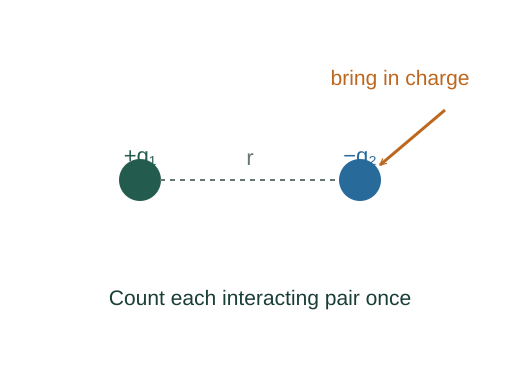

Build the potential energy of a charge arrangement
The energy of a charge configuration is the work needed to assemble it slowly from a chosen reference of infinitely separated charges. Each interacting pair is counted once.
What the symbols mean
qi: signed point charges; rij: pair separations; Vothers: potential due to all charges other than the charge at the evaluation point.
When this applies
Static point charges in vacuum, quasistatic assembly, and finite pair separations. Self-energies of ideal point charges are excluded.
Developing the argument

Bring in the first charge
With no other charges present, there is no interaction energy to overcome. Choose this contribution as zero.
Bring in the second charge
The first charge creates potential keq₁/r₁₂ at the second location. Quasistatic external work equals the potential-energy increase.
A closer lookDerive point-charge potential ↗Derive potential from an electric fieldAdd more charges
Each newly brought charge interacts with those already present. Summing this construction counts every unordered pair once.
Understand the factor one half
The sum ΣqiVothers at all charge locations counts pair i–j once from i and once from j. Divide by two to correct this duplication.
A worked example
Two charges +1 μC and −1 μC at 0.10 m have U ≈ −0.0899 J. Separating them to infinity requires positive external work 0.0899 J.
Derivation behind this calculation ↗A point to keep straight
Never include a point charge’s own divergent potential when computing Vothers. Negative U means lower energy than the chosen separated reference.
Check the assumptions and derivation ↗